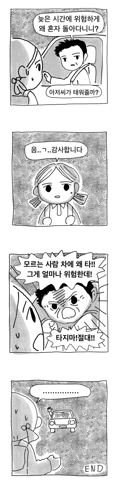

아저씨의 실전압축 인생교육

아저씨의 실전압축 인생교육
그렇게 얘기해주고 태워주지 아저씨...
저런 충격을 받은 상태로 집까지 걸어가는 것으로 교훈이 뼛속깊이 새겨짐
그럼 다음에 또타자나
모르는사람 차 타는거 아님

틀린 말은 아닌뎅
뭐지? 알아 아저씨인가..?
맞긴한데 왜 그럼물어봣서요
강렬하게 기억에 남아서 다신 모르는 사람 차 안타긴할듯
??? : 저기.. 아저씨?...
내가 좋은 사람이라 산거다! 명심해
내가 상향등 켜줄테니 옆에서 보고 걸으렴